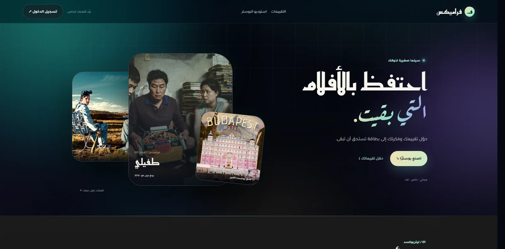

فراميكس
حوّل تقييماتك في Letterboxd إلى بوسترات سينمائية، ثم صدّر بطاقة ستوري بمقاس 1080 × 1920 — كل ذلك داخل المتصفح.
- استيراد Letterboxd
- صور TMDB
- تصدير ستوري
- بدون حساب
مجاني وثابت. تُعالج البوسترات محليًا، وتبقى تقييماتك في متصفحك.
